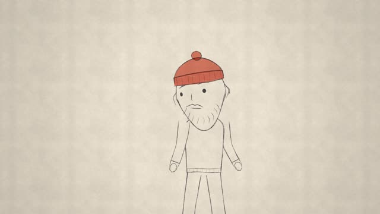
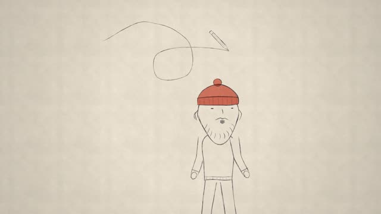
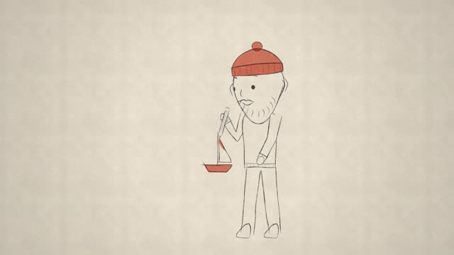
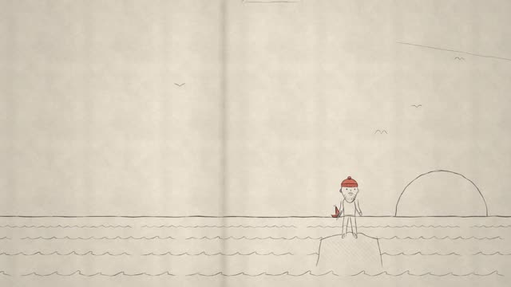
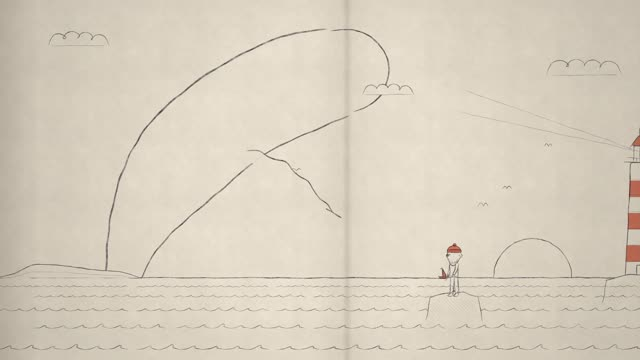
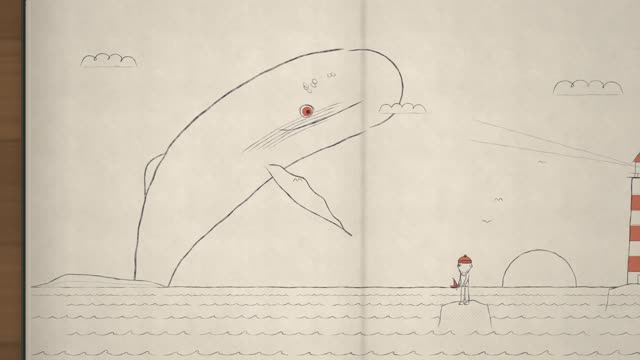
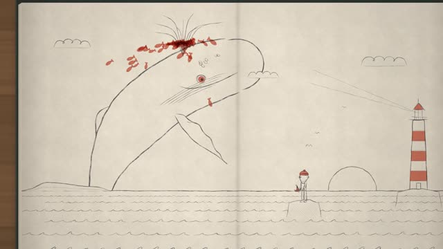
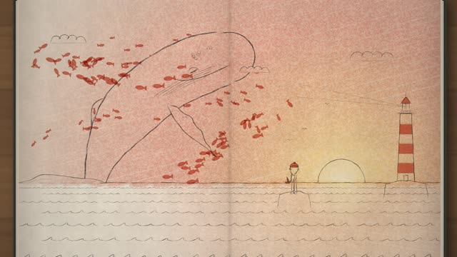
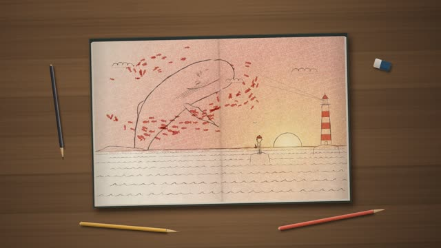
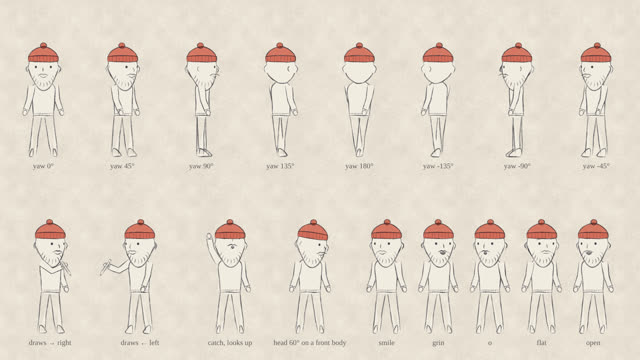

작업 흐름
- 입력
- 주제 한 줄 (예: 등대지기와 고래, 소년과 밤 부엉이)
- 브리프
- 주인공과 강조색 소품, 첫 그림, 퍼질 세계, 거대한 생물, 무리, 노을, 책상 소품, 시간표
- 설계
- 데이터로 만든 주인공(여덟 방향 캐스트 시트와 관절 검사), 주제에 맞춰 새로 그린 거대한 생물
- 검사
- 결정성, 손이 닿는 그림만 주인공이 그리기, 강조색 하나, 종이가 보이는지, 선이 끓는지
- 출력
- 1920×1080 MP4(24fps, 소리 포함)와 라이브 페이지
node pencil-dream-short/scripts/new-film.mjs my-film --from keeper
cd my-film
node ../pencil-dream-short/scripts/check.mjs film.html
node ../pencil-dream-short/scripts/score.mjs film.html --out out/film.wav
node ../pencil-dream-short/scripts/render.mjs film.html --workers 4 --audio out/film.wav요구 사항: Node, Playwright Chromium, ffmpeg. 단계별 순서는 SKILL.md에 있습니다.
샘플
원본에 없는 새 주제 두 편을 이 스킬로 만든 장면입니다. 카드를 누르면 그 장면부터 브라우저에서 재생됩니다.
「The Keeper's Whale」 32초 · 원테이크 · 강조색 산호색
늙은 등대지기가 날아온 연필을 잡아 작은 배를 그리면, 그 물금에서 바다가 퍼지고 수평선 너머로 혹등고래가 솟아오릅니다.

깨어남 · 0초빈 종이의 등대지기그려지며 나타나 두리번거리는 주인공

연필 · 3초날아온 연필선을 그리며 날아와 손에 잡히는 연필

첫 그림 · 6초산호색 돛배손이 닿는 곳에, 연필 끝이 선을 따라가며

퍼짐 · 9초저절로 퍼지는 바다물금에서 시작해 수평선, 물결, 등대, 갈매기

거대한 생물 · 15초큰 획으로 솟는 고래등의 긴 곡선 하나부터, 수평선 뒤에서

눈 · 19초칠해지는 눈눈을 뜨고 깜박이고 지느러미를 흔드는 고래

무리 · 21초물고기가 된 물줄기고래 앞뒤로 도는 강조색 물고기 떼

노을 · 24초크레용 노을해에서 번지는 금색과 산호색, 종이 결이 보이는 색

책상 · 27초스케치북이었던 세계진짜 색연필과 그림자가 있는 책상으로 빠지는 카메라

캐스트 시트여덟 방향과 표정앞뒤좌우와 팔이 닿는 범위를 먼저 검사
「Night Owl」 16초 · 시작 템플릿 · 강조색 코발트
목도리를 두른 소년이 허공에 별을 그리면 밤 마을이 퍼지고 언덕 뒤에서 거대한 부엉이가 눈을 뜹니다. 같은 문법을 짧게 담은 출발점입니다.
실제 작품
이 레포에서 만든 스킬입니다. OscarAI(@Artedeingenio)가 X에 올린 30초 영상이 출발점입니다. 주황 안경을 쓴 연필 그림 소녀가 연필을 잡아 꽃과 마을, 용을 그리고, 용 둘레로 주황 나비가 날다가 책상 위 스케치북으로 빠지는 영상으로, 이미지·영상 생성 모델로 만든 것입니다. 이 스킬은 그 문법(깨어남 → 연필 → 첫 그림 → 퍼짐 → 거대한 생물 → 무리 → 노을 → 책상)과 매체(흑연 선, 한 가지 강조색, 크레용)만 가져오고, 그림은 직접 만든 캔버스 엔진이 그립니다. 예제 「The Keeper's Whale」의 코드와 인물, 고래, 이야기, 음악은 모두 이 레포의 것입니다.
링크
- SKILL.md 워크플로
- 폴더 lib · scripts · references · templates · examples
- README.md 빠른 시작
- references/BRIEF.md 주제에서 브리프로, 검토 기준
- references/LOOK.md 원본에서 관찰한 그림체와 문법
- references/GRAMMAR.md 원테이크의 박자, 시간, 카메라
- references/API.md 라이브러리
- references/LESSONS.md 겪은 문제와 해결